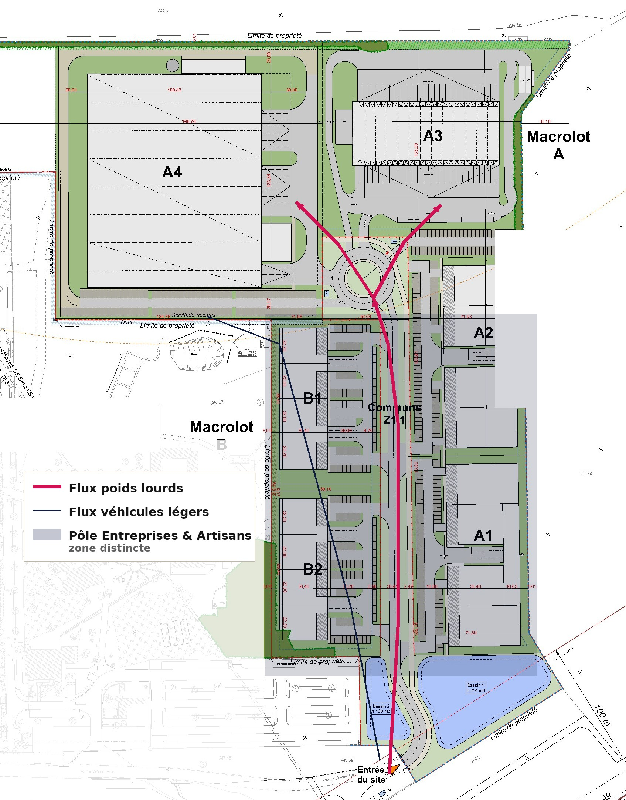
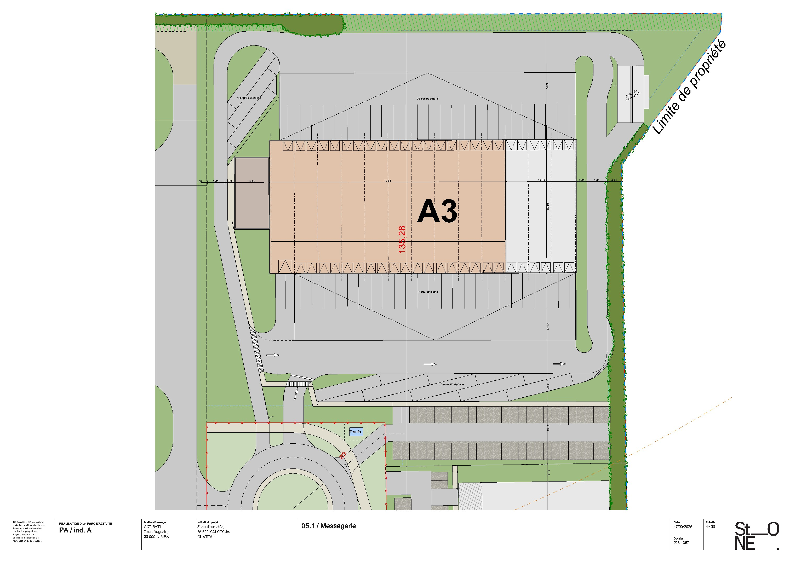

ROUSSILLON 41
Deux bâtiments d'exploitation de 4 026 et 15 245 m², 49 portes à quai, à deux minutes de l'échangeur.
Un parc développé par
Un site à deux minutes de l'échangeur,
déjà clos et déjà raccordé
Deux bâtiments d'exploitation de 4 026 et 15 245 m², sur un foncier de 9,7 hectares déjà artificialisé, couvert par un permis d'aménager unique. Livraison en clés en main locatif ou en acquisition.
Sortie 41 de l'A9, accessible dans les deux sens
L'entrée du parc est positionnée au sud, face à l'A9, à [distance exacte] de l'échangeur n°41, accessible en venant de Narbonne comme de Perpignan. La plupart des sites disponibles sur le littoral imposent un détour, un demi-échangeur ou une traversée d'agglomération : autant de minutes ajoutées à chaque rotation.
Un ensemble routier de 44 tonnes entre et ressort sans manœuvre d'approche, sans franchir un centre-bourg et sans contrainte horaire de traversée urbaine.
Le parc s'inscrit dans le prolongement direct de la zone d'activités Espace Entreprises Méditerranée de Rivesaltes, sur le corridor A9 / RN 9 / voie ferrée qui relie la péninsule ibérique au reste de l'Europe.
Distances et temps de parcours
Une zone logistique dédiée,
avec ses propres aires de manœuvre
Le parc est desservi par une entrée unique au sud, côté autoroute, et par une voirie commune. Au-delà du giratoire de distribution, chaque activité rejoint sa zone : la zone logistique occupe toute la partie nord du site, où sont regroupés les quais, les aires de manœuvre, l'attente PL et le stationnement. Vos ensembles routiers n'ont pas à traverser la zone des cellules PME et artisans pour atteindre leurs postes.
Avec un coefficient d'emprise au sol de 35,7 % sur l'ensemble du parc, les surfaces de dégagement ont été dimensionnées pour la manœuvre, pas pour le calcul réglementaire.
Les lots du pôle
| Lot | Foncier | SDP |
|---|---|---|
| A4 | 28 920 m² | 15 245 m² |
| A3 | 16 855 m² | 4 026 m² |
| Pôle | 45 775 m² | 19 271 m² |
A4 : 14 825 m² d'exploitation + 420 m² de bureaux.
A3 : 3 846 m² d'exploitation + 180 m² de bureaux.

A4 — 15 245 m², entrepôt et bureaux en R+1
L'outil d'exploitation d'un opérateur régional de messagerie ou de distribution, réalisable en clés en main sur votre cahier des charges.
| Surface de plancher totale | 15 245 m² |
| Exploitation | 14 825 m² |
| Bureaux et locaux sociaux (R+1) | 420 m² |
| Foncier du lot | 28 920 m² |
| Portes à quai | [à compléter] |
| Attente PL | [à compléter] |
| Stationnement VL | 83 places [à confirmer] |
| Hauteur libre sous poutre | [à compléter] |
| Charge admissible au sol | [à compléter] |
| Résistance au feu / sprinklage | [à compléter] |
| Régime ICPE | [à compléter] |
| Divisibilité | [à confirmer MOE] |
1. Hauteur libre, charge au sol, dispositif incendie et régime ICPE sont les quatre questions posées dans les cinq premières minutes. Une fiche muette sur ces points est classée « projet pas mûr » et ne ressort pas du dossier.
2. Le brief attribuait à A4 les « 49 portes à quai » et « 3 places d'attente PL ». Le plan 05.1 Messagerie porte ces mentions sur le bâtiment A3 — 25 portes au nord, 24 au sud, attente PL 3 places au nord et 5 places au sud. Le nombre de portes à quai propre à A4 n'apparaît sur aucune des pièces fournies : il reste à relever auprès de la maîtrise d'œuvre, de même que l'affectation des 83 places VL.
A3 — 4 026 m², 49 portes à quai
sur 16 855 m² de terrain
Un bâtiment traversant à quais sur ses deux façades — 25 portes au nord, 24 au sud — implanté sur une parcelle largement dimensionnée. Le dégagement autour du bâti permet le stationnement de flotte, le stockage extérieur ou l'implantation d'équipements techniques. 3 846 m² d'exploitation et 180 m² de bureaux.
Un format rare sur le littoral, où les parcelles se sont resserrées autour des bâtiments au fil des vingt dernières années : ici, 4 026 m² bâtis sur 16 855 m² de terrain laissent la cour nécessaire à une exploitation de messagerie à rotations courtes.
| Surface de plancher | 4 026 m² |
| Exploitation | 3 846 m² |
| Bureaux | 180 m² |
| Foncier du lot | 16 855 m² |
| Portes à quai | 25 + 24 |
| Attente PL | 3 + 5 places |
| Longueur du bâtiment | 135,28 m |
| Station de lavage PL | sur site |
| Hauteur libre sous poutre | [à compléter] |
| Régime ICPE | [à compléter] |

Des bâtiments conçus pour limiter
les charges d'exploitation
Toitures équipées en photovoltaïque pour une autonomie énergétique partielle. Bâtiments compacts. Gestion intégrée des eaux pluviales par infiltration à la parcelle, noues et bassins végétalisés totalisant plus de 6 300 m³. Éclairage LED à détection avec réduction nocturne. Voiries et stationnements en matériaux perméables.
Les études déjà conduites
- Étude de trafic : favorable
- Étude géotechnique G2 AVP : sol porteur, sans confortement nécessaire
- Étude hydraulique et de perméabilité : favorable à l'infiltration, aucune nappe relevée
- Diagnostic des infrastructures et réseaux : viabilité en bordure
- Diagnostic environnemental : [à mettre à jour]
- Site hors PPRI, hors zones humides, zonage UEa au PLU
Un site clos, une entrée unique,
un parc géré
Le site est ceint de murs béton sur trois côtés et fermé au sud par un portail — une configuration héritée du site AFPA, conservée et renforcée. Une seule entrée, contrôlée, pour l'ensemble du parc, à l'écart des voies de desserte publiques.
La gestion des parties communes — voiries, éclairage, espaces verts, bassins — est organisée dès le permis d'aménager, avec un budget connu à l'avance.
| Dispositif | État |
|---|---|
| Clôture périmétrique | Murs béton sur trois côtés |
| Accès | Entrée unique au sud, portail |
| Contrôle d'accès | [à préciser MOE] |
| Vidéosurveillance / gardiennage | [à préciser MOE] |
| Gestion des communs | [mode à préciser] |
| Charges annuelles au m² | [ordre de grandeur] |
Commune classée en Zone France
Ruralités Revitalisation
Salses-le-Château est classée en Zone France Ruralités Revitalisation. Les entreprises créées ou reprises dans ces zones entre le 1er juillet 2024 et le 31 décembre 2029 peuvent bénéficier d'une exonération d'impôt sur les bénéfices — totale pendant cinq ans, puis dégressive — sous conditions d'implantation du siège, de l'activité et des moyens d'exploitation dans la zone. Des exonérations de CFE et de taxe foncière peuvent s'y ajouter sur délibération des collectivités. Votre direction fiscale validera votre éligibilité.
Clés en main sur votre cahier des charges,
à louer ou à acquérir
| Formule | Ce qu'elle recouvre |
|---|---|
| Clés en main locatif (BEFA) | Nous concevons et réalisons le bâtiment sur votre cahier des charges d'exploitation, vous l'occupez dans le cadre d'un bail en état futur d'achèvement. |
| Clés en main acquisition / VEFA | Vous devenez propriétaire de votre outil, avec la maîtrise de votre charge d'occupation dans la durée. |
| Location de bâtiment livré | Pour une prise de position rapide sur le corridor. |
Calendrier indicatif
Un parc développé, réalisé
et livré par ACTI BATI
ACTI BATI développe de l'immobilier d'entreprise dans le sud de la France : bâtiments industriels, logistiques et tertiaires. Nous maîtrisons la chaîne complète — foncier, programmation, autorisations, travaux, livraison — et nous en portons le risque. C'est ce qui nous permet de nous engager sur une date, et pas seulement sur une intention.
Un interlocuteur unique suit votre dossier de la première visite à la remise des clés.
Références livrées
| Opération | Surface | Preneur | Délai |
|---|---|---|---|
| [à compléter] | [—] | [—] | [—] |
| [à compléter] | [—] | [—] | [—] |
| [à compléter] | [—] | [—] | [—] |
L'équipe du projet
- Maîtrise d'ouvrage — ACTI BATI, 7 rue Auguste, 30000 Nîmes
- Architectes — STONE ARCHITECTES
- Paysagiste — CMO Paysages
- Bureau d'études VRD — VERTICALSEA
- Bureau d'études hydraulique — TECTA
Organiser une visite
Commercialisation
Adresse du parc
Pla de Salses, avenue Clément Ader
66600 Salses-le-Château
Coordonnées GPS : [à compléter]
Document non contractuel. Illustrations d'intention. Surfaces prévisionnelles susceptibles d'évoluer. Données issues du tableau de surfaces STONE MACRO du 15.09.2026 et du plan PA9.1 indice A du 06/07/2026. Les éléments relatifs au dispositif ZFRR sont donnés à titre d'information et doivent être validés par un conseil avant diffusion commerciale.